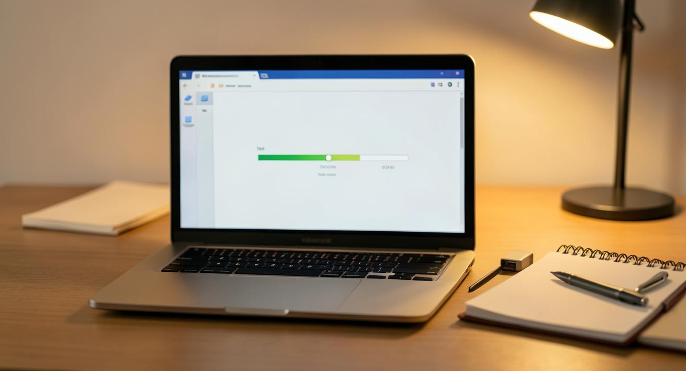
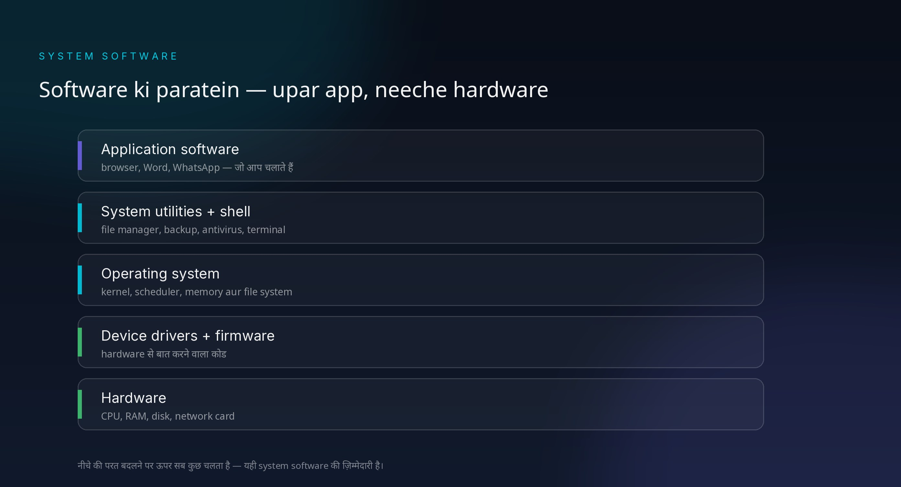

System Software Kya Hai? Types, Examples aur Kaam

जब आप laptop खोलते हैं, तो सबसे पहले वह चीज़ चलती है जिसे आप देखते भी नहीं। Screen पर logo आता है, पासवर्ड माँगा जाता है, फिर desktop दिखता है — और उसके बाद आप browser खोलते हैं। बीच में जो कुछ हुआ, वह system software का काम था।
इस आर्टिकल में मैं समझाऊँगा कि system software kya hai, यह application software से किस तरह अलग है, इसके तीन मुख्य हिस्से — operating system, device drivers और utilities — क्या करते हैं, कुछ असली उदाहरण, और छोटी कंपनी या दुकान के लिए इसे सही रखने के तरीके। साथ में यह भी बताऊँगा कि कब update करना चाहिए और कब रुक जाना चाहिए।
छोटा जवाब: system software वह software है जो computer के hardware को चलाता और संभालता है — जैसे Windows, Linux, macOS, device drivers और backup तथा antivirus जैसी utilities। application software वह है जिससे आप असली काम करते हैं, जैसे browser, Word या Tally।
System software kya hai
system software उन programs का समूह है जो computer के संसाधन — processor, memory, disk, network और screen — को प्रबंधित करते हैं। यह सीधे user के काम के लिए नहीं, बल्कि user के काम को संभव बनाने के लिए होता है।
एक साधारण उदाहरण लें। आप Word में एक file save करते हैं। Word को नहीं पता कि file disk के किस हिस्से में लिखी जाएगी, कितनी जगह है, या अगर बिजली चली जाए तो क्या होगा। यह सब operating system का file system करता है। Word सिर्फ इतना कहता है — "यह data इस नाम से रख दो"।
इसी तरह जब आप print करते हैं, तो application सिर्फ print का आदेश देता है; printer को समझने वाला कोड driver में होता है। जब आप कई apps एक साथ चलाते हैं, तो किसको कितनी memory और कितना processor time मिलेगा, यह scheduler तय करता है। यह सब system software की परत है।
System software aur application software me farq
यह फर्क समझना ज़रूरी है, क्योंकि दोनों की ज़रूरत, कीमत और रखरखाव अलग होते हैं।
| पहलू | System software | Application software |
|---|---|---|
| काम | machine को चलाना और संभालना | user का काम करना |
| उदाहरण | Windows, Linux, drivers, backup tool | Browser, Word, Tally, WhatsApp |
| कौन चलाता है | खुद, background में | user जब चाहे |
| बंद करना | मुश्किल, पूरा system रुक जाएगा | आसान, बस window बंद करें |
| गड़बड़ी का असर | पूरा computer प्रभावित | आमतौर पर एक ही app |
एक सरल तरीका याद रखने का — system software वह फर्श है जिस पर आप चलते हैं; application software वह सामान है जो आप उठाते हैं। फर्श खराब हो तो सामान किसी काम का नहीं।
System software ke teen hisse
1. Operating system
यह सबसे बड़ा हिस्सा है। इसमें kernel होता है, जो memory, processor और devices के बीच समन्वय करता है; file system होता है, जो disk पर data का ढाँचा संभालता है; और user interface होता है — command line या desktop।
आम उदाहरण — Windows, Linux (Ubuntu, Fedora), macOS, Android और iOS। हर एक का काम एक ही है, पर तरीका अलग। Windows और macOS desktop के लिए बने, Android और iOS फोन के लिए, और Linux सर्वर से लेकर छोटे devices तक हर जगह चलता है।
2. Device drivers
driver वह छोटा program है जो operating system को बताता है कि किसी खास hardware से कैसे बात करनी है — printer, scanner, graphics card, WiFi adapter या बायोमेट्रिक device। बिना सही driver के hardware मौजूद होकर भी काम नहीं करता।
यही कारण है कि नया printer लगाने पर कभी-कभी software डाउनलोड करना पड़ता है। operating system के पास हर device की जानकारी नहीं होती, इसलिए निर्माता driver देता है।
3. Utilities
utilities वे छोटे tools हैं जो system को स्वस्थ रखते हैं — backup, antivirus, disk cleanup, compression, file manager, task manager, और update tools। ये अनिवार्य नहीं होते, पर इनके बिना system धीरे-धीरे भरता और धीमा होता जाता है।

Kaam kaise baantta hai — ek asli example
मान लें आपके पास 8 GB RAM वाला laptop है और आप एक साथ browser में 15 tabs, WhatsApp, एक spreadsheet और एक video call चला रहे हैं। इन सबको एक साथ चलाने के लिए system software चार काम करता है।
पहला — memory का बँटवारा। हर app को ज़रूरत के हिसाब से जगह मिलती है। जब जगह कम पड़ती है, तो कुछ data disk पर भेजा जाता है, जिससे सब कुछ थोड़ा धीमा होता है — यही अनुभव "laptop hang हो रहा है" जैसा लगता है।
दूसरा — processor का समय। एक ही processor कई कामों को इतनी तेज़ी से बदलकर चलाता है कि लगता है सब साथ चल रहे हैं। यह scheduling है।
तीसरा — network और storage। video call का data आना-जाना, spreadsheet का autosave, और browser का cache — सब अलग-अलग devices से बात करते हैं, और यह काम drivers तथा file system करते हैं।
चौथा — सुरक्षा। हर app को सीमित अधिकार मिलते हैं। एक app दूसरे की files नहीं पढ़ सकता, जब तक अनुमति न हो। यही सीमा किसी गलत software को पूरा system खराब करने से रोकती है।
Examples jo rozana dikhte hain
Windows: घर और दफ्तर के desktop पर सबसे आम। आसान interface, बहुत सारे software का support, और wide hardware compatibility। कमज़ोरी — समय के साथ धीमा होना और licence की कीमत।
Linux: सर्वर, cloud और embedded devices की पहली पसंद। free है, हल्का चलता है, और इसे ज़रूरत के हिसाब से बदला जा सकता है। desktop पर इसका इस्तेमाल बढ़ रहा है, पर कुछ खास software अभी भी नहीं चलते।
macOS: Apple के hardware के साथ आता है। hardware और software एक ही कंपनी का होने से अनुभव साफ रहता है, पर कीमत और मरम्मत का विकल्प सीमित होता है।
Android और iOS: फोन के operating system। इनमें apps को सीमित अधिकार मिलते हैं, इसलिए सुरक्षा का ढाँचा desktop से अलग है।
Utilities के उदाहरण: Windows का Disk Cleanup और Task Manager, Linux का top, rsync और cron, backup के लिए Veeam या Macrium, और antivirus के लिए Windows Defender।
Chhoti company ke liye system software ka setup
अगर आपकी टीम 5 से 20 लोगों की है, तो system software पर बहुत खर्च करने की ज़रूरत नहीं, पर कुछ बातें तय होनी चाहिए।
- एक जैसा system रखें। सब लोगों के laptop पर एक ही operating system का एक ही version हो, तो मदद करना आसान होता है। मिला-जुला रखना भी चल सकता है, पर तब हर समस्या दो बार सुलझानी पड़ती है।
- Automatic update चालू रखें। security updates बंद रखना सबसे आम और सबसे महंगी गलती है। update का समय रात या lunch break में तय करें।
- Backup की एक ही आदत। हफ्ते में एक बार पूरा backup और रोज़ का छोटा backup। कम से कम एक copy ऐसी जगह रखें जो ransomware से जुड़ी न हो।
- Antivirus अनिवार्य। Windows Defender काफी है; ज़रूरत हो तो एक भुगतान वाला tool लें, पर दो antivirus एक साथ न चलाएँ।
- Admin अधिकार सीमित रखें। सबको administrator account न दें। जो इंसान software install नहीं करता, उसे admin अधिकार की ज़रूरत नहीं।
यह पाँच आदतें किसी भी बड़े tool से ज़्यादा सुरक्षा देती हैं, और इनमें खर्च लगभग शून्य है।
Update kab karen aur kab ruken
security update में देरी नहीं करनी चाहिए। पर feature update — यानी नया version — के साथ थोड़ा इंतज़ार ठीक है, खासकर जब उस पर रोज़ का काम टिका हो।
एक साधारण नियम — security patch तुरंत, बड़ा version update दो हफ्ते बाद, और production server पर पहले एक test machine पर। जो update सब जगह एक साथ लगाया जाता है, वह एक ही रात में पूरा दफ्तर रोक सकता है।
पुराने system को भी अनदेखा न करें। जो Windows या Linux version अब support में नहीं है, उसे security update नहीं मिलते। ऐसे system पर चलाना दरवाज़ा खुला छोड़ने जैसा है।
System software aur cloud ka rishta
जब आप किसी website का इस्तेमाल करते हैं, तो आपका system software सिर्फ browser चलाता है; बाकी सारा काम सर्वर पर होता है। वहाँ भी वही परतें हैं — Linux, drivers, utilities और monitoring। फर्क यह है कि वह ज़िम्मेदारी अब आपकी नहीं, service देने वाले की है।
इसका फायदा यह है कि छोटी टीम को server के patch और backup की चिंता नहीं करनी पड़ती। नुकसान यह है कि आपको पता नहीं होता कि data कहाँ है और कब क्या बदला। इसलिए ऐसे सेवा देने वाले चुनते समय यह ज़रूर पूछें कि data किस देश में रहेगा।
अगर आप खुद server चलाते हैं, तो system software का काम बढ़ जाता है — update, monitoring, log rotation और disk की जगह, सब आपके ज़िम्मे। यही वजह है कि ज़्यादातर छोटी टीमें managed service चुनती हैं।
Mobile aur embedded devices me
आपके फोन में भी वही ढाँचा है, पर सीमाएँ कड़ी हैं। हर app को अलग जगह चलाया जाता है, camera या contacts तक पहुँच के लिए अनुमति माँगी जाती है, और background में चलने की सीमा होती है। यही कारण है कि फोन कम memory में भी ठीक चलता है।
embedded devices — router, smart TV, ATM, billing machine — में system software अक्सर हल्का Linux होता है, जिसे firmware कहते हैं। इनमें update का विकल्प सीमित होता है, इसलिए खरीदते समय पूछें कि अगले तीन साल update मिलेंगे या नहीं। जो device update नहीं ले सकता, वह समय के साथ जोखिम बन जाता है।
Performance slow ho to kya dekhen
धीमा system हमेशा पुराने hardware की वजह से नहीं होता। तीन चीज़ें पहले जाँचें।
- Disk भरा हुआ। अगर system drive में 10 प्रतिशत से कम जगह बची है, तो सब कुछ धीमा हो जाता है।
- Startup पर बहुत सारे programs। जो app रोज़ काम नहीं आता, उसे startup से हटा दें।
- Memory की कमी। अगर task manager में memory लगातार 90 प्रतिशत पर है, तो RAM बढ़ाना सबसे सस्ता सुधार है।
इनके बाद भी धीमापन रहे, तो storage को SSD में बदलना सबसे बड़ा फर्क डालता है। पुराने laptop में SSD लगाने से वह अक्सर नए जैसा महसूस होता है।
मैंने system software के बारे में क्या सीखा
सबसे बड़ी सीख यह रही कि system software की अनदेखी सबसे महंगी पड़ती है, क्योंकि उसका असर एक साथ सब पर होता है। जब एक दफ्तर में update बंद रखे गए, तो एक ही हफ्ते में तीन मशीनें रुकीं और दो दिन का काम जोखिम में पड़ा। उसके बाद हमने update का समय तय किया और हर मशीन का हफ्तावार backup शुरू किया।
दूसरी सीख — नया हमेशा बेहतर नहीं होता। बड़े version update से पहले एक मशीन पर दो हफ्ते चलाना अच्छी आदत है, खासकर जब उस पर billing या accounts का काम टिका हो।
तीसरी सीख — जो चीज़ मुफ्त में मिलती है, उसे संभालना पड़ता है। Linux मुफ्त है, पर उसका patch, backup और monitoring आपका काम है। कुल लागत देखें, सिर्फ licence की कीमत नहीं।
अक्सर पूछे जाने वाले सवाल
क्या Windows system software है?
हाँ। Windows एक operating system है, जो system software की सबसे बड़ी श्रेणी है।
क्या antivirus system software है?
यह utility की श्रेणी में आता है, यानी system software का ही हिस्सा — क्योंकि यह सीधे user का काम नहीं, system की सुरक्षा करता है।
क्या browser system software है?
नहीं। browser application software है, क्योंकि उससे आप काम करते हैं। हाँ, वह system software की सेवाओं पर निर्भर रहता है।
System software के बिना computer चल सकता है?
नहीं। hardware को चलाने, memory बाँटने और files संभालने का काम system software ही करता है। बिना उसके computer सिर्फ धातु और plastic है।
क्या मुफ्त system software सुरक्षित है?
Linux जैसे open source system सुरक्षित माने जाते हैं, बशर्ते आप official source से लें और update करते रहें। सुरक्षा की गारंटी कीमत से नहीं, रखरखाव से आती है।
अगर आप अपनी टीम का तकनीकी ढाँचा समझ रहे हैं, तो Kubernetes architecture की गाइड और AWS cloud वाला आर्टिकल काम आएंगे। Software लिखने वालों के लिए unit testing की बुनियाद पढ़ें।
आगे पढ़ें: Linux kernel और उसके हिस्सों की जानकारी kernel.org पर, और operating system की बुनियादी बातें GNU Project पर पढ़ें। हर version का support समय बदलता रहता है, इसलिए update से पहले निर्माता की आधिकारिक सूची देखें।